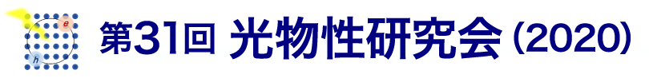

- 光物性研究会では写真・動画撮影・録音・スナップショット等の 記録行為を禁止 します。 未公開のデータなども出てくる可能性がありますので、厳守でお願いします。
- ショートプレゼンテーションとチュートリアル、特別講演は主催者側でZoom記録をとりますが、 現在のところ、公開予定はありません。ご了解ください。
- ポスターセッションに限り、教育的効果を考えて、発表者によるZoomなどでの録画を許可します。 発表者が録画する際には、あらかじめコメント欄などでその旨を周知するようお願いいたします。 参加者による録画は許可しない様にお願いします。
- プログラムのページにおいて、各講演番号の下に
 が表示されている論文は、論文pdfの公開を選択されたものです。
が表示されている論文は、論文pdfの公開を選択されたものです。
- 論文pdfの公開・非公開の変更を希望される方は、12月17日(木)までに、事務局の 赤井にご連絡ください。事務局のメールアドレスは、左欄の最下部をご参照ください。
- 現時点では、各論文の
のリンク先は切れていますが、
12月18日以降に、各論文pdfファイルへのリンクを有効にする予定です。

招待講演やショートプレゼンテーションは、Zoom にて開催いたします。Zoom リンクにアクセスするためには、 パスワードが必要 となります。ポスターや投稿論文のPDFファイルを表示するためにもパスワードが必要となります。
- 事前に参加登録をいただいた方々
従来の光物性研究会のWebサイトにて、事前に参加登録をいただいた方々には、 組織委員長が12月7日にメールし、パスワードをお伝えします。 - 事前に参加登録をされていない方
研究会開催前もしくは当日に、以下の Googleフォーム から参加登録をお願いいたします。 登録されますと、パスワードが通知されます。参加費は後日振り込んでいただく形となります。
https://docs.google.com/forms/d/1VXMmEYCZj2IgugN2uyOfcywYUZt5ObLlpdM9nZeAFeE/viewform
●
オンライン開催サイト
でのアカウント登録
上記オンライン開催用のWebサイト
の右上や下部に表示されるアカウント登録をお願いします。登録しなくても研究会に一通り参加することはできますが、
各ポスター発表で Zoom などのトラブルが生じた際、発表者と視聴者とのコミュニケーションの手段は
コメント機能
しか
存在しません。アカウント登録をすることでのみ、コメントを読み書きすることが可能となります。このような事情により、
参加者には（発表者だけでなく視聴するだけの方も）できる限り、アカウント登録をお願いできればと考えております。
アカウント登録すると、気になる発表をチェックする機能（マイスケジュール）も利用可能となります。
●オンライン参加のための準備
初めての光物性研究会のオンライン開催にあたり、できる限りのトラブル回避のため、以下の点、ご協力をお願いいたします。
- Zoom は最新版へのアップデートをお願いします。 (Zoom社の参考ページ)
- 前述の通り オンライン開催サイト でのアカウント登録をお願いします。
- 発表者の方へのお願い。
発表者は、 オンライン開催用のWebサイト にて、ご自身の発表に関する情報:- 論文PDFファイル
- ポスター用PDFファイル
- ポスター用ZoomのURL
- 発表の コアタイム （以下参照のこと）
もし、登録内容に修正が必要な場合、 ご自身の発表のコメント欄 を利用して他の参加者に連絡する等、 柔軟な対応を発表者自身でお願いいたします。 - ショートプレゼンテーション
ショートプレゼンテーションは Zoom にて開催します。以下についてご注意ください。- 事前に登録いただいた「ショートプレゼンテーション用のPDFファイル」は、プログラム順序にまとめ、京都大学の Zoom ホストが画面共有により配信いたします。
- 発表者は、ページングや、ポインタ（カーソル）でスライドを指し示すことはできません。 そのため、以下の工夫と対応をお願いします。
- ページングの際には、 「次のページ」などと発声 いただいて、京都大学の Zoom ホストの担当者にお知らせください。
- ポインタ（カーソル）でスライドの一部を指し示すことは出来ませんので、 流れがわかりやすいように説明を工夫 してください。
- ポスター発表
ポスター発表は、発表者に事前に登録いただいた Zoom や Webex にて各自で開催してください。
ただし、以下の コアタイム では、該当の発表者はZoomなどのオンラインツールにより、 必ず発表 をしてください。
なお、セッション中はコアタイム以外の時間も発表可です。- 2020年12月11日(金)
15:50~16:30 / I A-3〜9
16:30~17:10 / I A-10〜16
17:10~17:50 / I A-17〜23 - 2020年12月11日(金)
15:50~16:30 / I B-24〜30
16:30~17:10 / I B-31〜37
17:10~17:50 / I B-38〜44 - 2020年12月12日(土)
13:30~14:10 / II-45〜51
14:10~14:50 / II-52〜58
14:50~15:30 / II-59〜65
- 2020年12月11日(金)
全てのオンライン登録を終了しました。新たな参加登録の方法は、後日お知らせします。
- 今年度はオンライン開催のため、ショートプレゼンテーションにおいて、例年と違った 対応をとっていただく必要があります。
- ショートプレゼンテーションは、オンライン登録頂いた「ショートプレゼンテーション 用のpdfファイル」をプログラム順序にまとめ、それを京都大学のZoomホストで配信い たします。
- そのため、発表者は、ページングや、ポインタ（カーソル）で スライドを指し示すことはできません。
- 以上のことから、以下の工夫と対応をお願いします。
- ページングの際には、「次のページ」等を発声 いただいて、京都大学のZoomホストの担当者にお知らせください。
- ポインタ（カーソル）でスライドの一部を指し示すことは出来ませんので、 流れがわかりやすいようにスライドや説明を工夫 してください。 してください。
- ポスター用PDFについて
今回はオンライン開催のため、全てのポスター発表でポスター用のファイルを事前に Web登録いただく必要があります。- ポスター用PDFファイルの登録〆切は、
2020年11月20日(金)です。
ファイルの書式については ポスター用のファイル をご参照ください。 - ポスター用PDFファイルの登録は、 論文登録メニューからお願いします。
- ポスター用PDFファイルの登録〆切は、
2020年11月20日(金)です。
- また、全てのポスター発表には、ショートプレゼンテーションが付随します。
- 今年度のポスター発表1件あたりのショートプレゼンテーションの時間は
2分30秒
です。
- ショートプレゼンテーション用のPDFファイルの登録〆切は、
2020年12月2日(水)です。
ファイルの書式については ショートプレゼンテーション用のファイル をご参照ください。 - ショートプレゼンテーション用のPDFファイルの登録は、 論文登録メニューからお願いします。
- 今年度のポスター発表1件あたりのショートプレゼンテーションの時間は
2分30秒
です。
ポスター説明用Web meetingのリンクについてをご確認ください。
- 【ミーティングURL の期限切れ条件】の情報を追加しました。(Updated @ 2020-10-29)
ポスター発表用のPDFファイルの登録〆切の記載に間違いがありました。11月20日(金)が正しい〆切です。
タイムラインに沿った〆切は、以下のとおりです。
- 2020年11月2日(月)〆切: 「グループ登録」、「参加登録」、「論文情報」、「投稿論文のPDFファイル」
- 2020年11月20日(金)〆切: 「ポスター発表用のPDFファイルの登録」
- 2020年12月2日(水)〆切: 「ショートプレゼンテーション用のPDFファイルの登録」
今年度はポスター発表もオンラインで行いますので、発表者がホストとなるWeb meetingをご用意いただき、 論文情報にそのURLを登録して頂く必要があります。 それに関する情報を掲載しました。
光物性研究会への参加登録(グループ登録を含む)や発表論文登録は、
全てWebページからオンライン登録で行います。
参加費の振込みも参加のオンライン登録を済ませてからお願いします。
また今年度はオンライン開催のため、例年と異なり、
論文情報の登録の際に「ポスター説明用Zoom Link」
の登録と、
ショートプレゼン用PDFファイルの登録締め切りと同じタイミングで
ポスター用PDFファイルの登録
が必要です。
- オンライン登録について
(初めての方は必ずお読みください。)
- グループ登録メニュー
2020年11月2日(月)までにお願いします。 - 参加登録メニュー
2020年11月2日(月)までにお願いします。この後の参加登録も受け付けますが、参加費が上がります。 - 論文登録メニュー
- 論文情報の登録と投稿論文のPDFファイルの登録〆切は、
2020年11月2日(月)です。
ファイルの書式については論文書式をご参照ください。 - ポスター発表用のPDFファイルの登録〆切は、
2020年11月20日(金)です。
ファイルの書式については ポスター用のファイル をご参照ください。 - 全てのポスター発表に付随するショートプレゼンテーション用のPDFファイルの登録〆切は、
2020年12月2日(水)です。
ファイルの書式については ショートプレゼンテーション用のファイル をご参照ください。
- 論文情報の登録と投稿論文のPDFファイルの登録〆切は、
2020年11月2日(月)です。
- 簡易マニュアル(PDF)
- 個人参加の方へ
- チュートリアル講義:
「強相関電子系、超伝導体の超高速光物性ーフェムト秒からアト秒領域へー」（仮題）
岩井伸一郎先生（東北大学） - 特別講演:
「光マグノニクスの開拓」
佐藤琢哉先生（東京工業大学）
- 日時： 2020年12月11日(金) 〜12日(土), 予備日13日(日)
- オンライン開催 (Zoom)